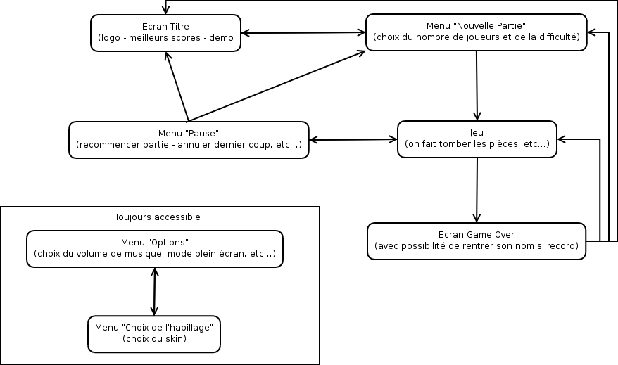
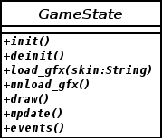
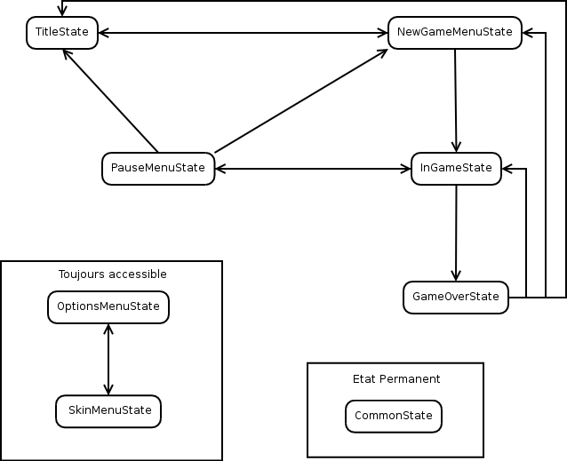
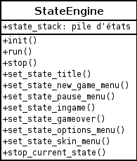

Ce document a pour but de modéliser les différentes parties du jeu OpenAlchemist dans le but de trouver une structure de programmation cohérente, claire et évolutive.
Le programme est constitué d'une phase de jeu mais également de différents menus. Ces phases permettent de distinguer plusieurs "états" dans lesquels peut se trouver le programme. Le diagramme suivant montre les différents états et leurs intéractions. Les flèches signifient "passer de l'état A à l'état B".

Figure : Intéractions entre états
Selon ce diagramme, il ne peut y avoir, à un instant donné, qu'un seul et unique état actif. Or, il est voulu que les menus permettent de voir l'avancement du jeu (les menus ne recouvrent pas entièrement la fenetre, ils sont transparants, l'écran titre présente une partie gérée par l'ordinateur...). En fait, chaque état partage une chose en commun : on voit le même fond d'écran et l'état du plateau en permanence. Ainsi, les informations concernant le plateau et les méthodes qui permettent de l'afficher doivent se trouver dans une partie commune. Nous avons pris le parti de placer cette partie du programme dans un etat distinct, actif en permanence.
On voit aussi que la succession des états n'est pas du tout linéaire. On ne peut donc pas la prédire.
La partie du programme qui sera chargée de s'occuper des différents états sera appelée le State Engine.
Les états seront representés à l'aide de classes héritant d'une classe abstraite GameState. Chaque état s'occupera de ses événements clavier, de son affichage et de son comportement. La figure suivante présente la description de la classe GameState.

Figure : La classe abstraite GameState
Le StateEngine sera constitué d'unez boucle, la boucle principale du programme, qui appelera les méthodes des GameState. Il aura pour ca une référence vers le State en cours. En parallèle, il appelera les méthodes de l'état permanent, appelé CommunState, qui affichera les décors, les pièces, et tout ce qui sera communs aux différents états.
La succession des états se fera via les états eux-mêmes, qui décideront quel état doit prendre leur place. Le StateEngine possèdera une pile d'états. Cela permet de revenir à l'état précédant celui qui est en cours, si besoin. Le sommet de la pile désignera l'état courant.
Voici la liste des états, reprennant le diagramme d'intéractions, suivi de la classe StateEngine.

Figure : Nom des états

Figure : Classe StateEngine